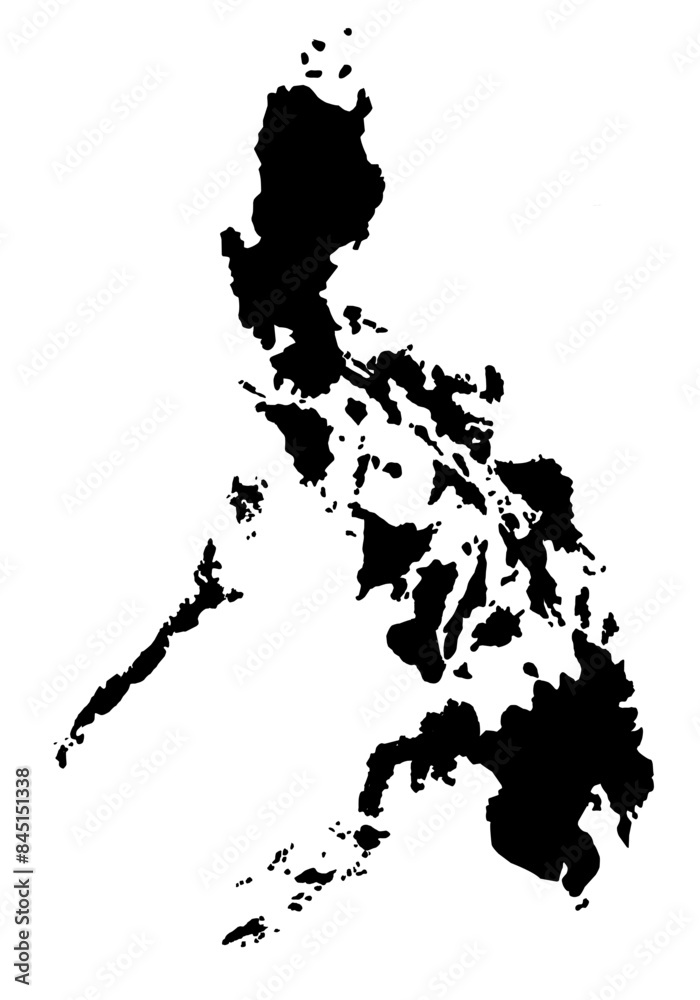

Welcome to the photo tour of the top places in the Philippines! Discover the beauty of these amazing destinations.
Tour Destinations:
- Palawan - Pristine beaches and clear waters
- Boracay - Famous for its white sand beaches
- Siargao - The surfing capital of the Philippines
- Banaue Rice Terraces - A UNESCO World Heritage site
- Manila - The vibrant capital city